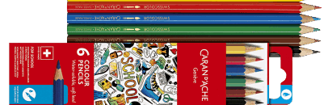
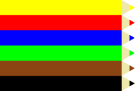

from pytamaro.de import *7 Farbstiftschachtel (verschachtelte for-schleifen)
Schweizer Schulkinder werden mit Prismalo-Farbstiften von Caran D’Ache sozialisiert. Praktisch alle kennen die Schachtel mit sechs Farbstiften.

In dieser Übung werden wir mit Sechser-Schachtel anfangen und uns bis zur Schachtel mit 120 Farbstiften hocharbeiten. Damit der Aufwand für die Grundstruktur des Farbstiftes nicht zu gross wird, stelle ich Ihnen unten eine Funktion farbstift() zur Verfügung. Sie nimmt den Rot-, Grün- und Blauwert der RGB-Farben als Argumente entgegen und gibt einen entsprechend eingefärbten stilisierten Farbstift zurück.
def farbstift(r, g, b):
farbe = rgb_farbe(r, g, b)
schaft = rechteck(200, 25, farbe)
holzspitze = dreieck(25, 25, 60, rgb_farbe(238,232,170))
farbspitze = dreieck(10, 10, 60, farbe)
holzspitze_fixiert = fixiere(oben_mitte, holzspitze)
farbspitze_fixiert = fixiere(oben_mitte, farbspitze)
spitze = kombiniere(farbspitze_fixiert, holzspitze_fixiert)
spitze_ausgerichtet = drehe(-90, spitze)
farbstift_gespitzt = neben(schaft, spitze_ausgerichtet)
return farbstift_gespitzt7.1 Kartonschachtel 6 wasservermalbare Farbstifte SCHOOL LINE
Als Beispiel zeichne ich hier die Schachtel der obigen Abbildung.
gelber_farbstift = farbstift(255, 255, 0)
roter_farbstift = farbstift(255, 0, 0)
blauer_farbstift = farbstift( 0, 0, 255)
gruener_farbstift = farbstift( 0, 255, 0)
brauner_farbstift = farbstift(139, 69, 19)
schwarzer_farbstift = farbstift( 0, 0, 0)
schachtel = leere_grafik()
schachtel1 = ueber(gelber_farbstift, schachtel)
schachtel2 = ueber(schachtel1, roter_farbstift)
schachtel3 = ueber(schachtel2, blauer_farbstift)
schachtel4 = ueber(schachtel3, gruener_farbstift)
schachtel5 = ueber(schachtel4, brauner_farbstift)
schachtel6 = ueber(schachtel5, schwarzer_farbstift)
zeige_grafik(schachtel6)
7.2 Etui 120 Farben SUPRACOLOR Aquarelle
Für eine Schachtel mit sechs Farbstiften funktioniert die manuelle Methode leidlich. Die Schachtel mit 120 Farbstiften ist aber sehr aufwändig.
Wie wir gesehen haben, können repetitive Aufgaben mit for-Schleifen automatisiert werden. Für die Farbstifte müssen drei Änderungen parallel vorgenommen werden. Dazu können mehrere for-Schleifen ineinander verschachtelt werden.
# TODO: verschachtelte Schleife für 120 Farbstifte